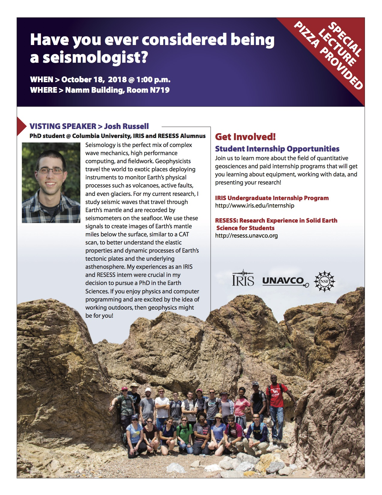

Pathways Into Geophysics and Seismology
Date
Oct 18, 2018
1:00 PM
Location
New York City College of Technology, Brooklyn, NY
Links
In recent years, an effort has been made to broaden the geosciences both in terms of the number of underrepresented minorities as well as students with backgrounds in math, physics, and computer science. As an alumnus of the IRIS IRIS and UNAVCO RESESS emersive undergraduate research programs, I serve as one of the 2018 IRIS recruitment speakers as part of the IRIS Recruitment Lecture Series. In this role, I travel to minority-serving institutions to speak to undergraduates in the geosciences, mathematics, physics, and computer science about geophysics and seismology career paths as well as opportunities that are available for undergraduate research. See below for the flyer:
